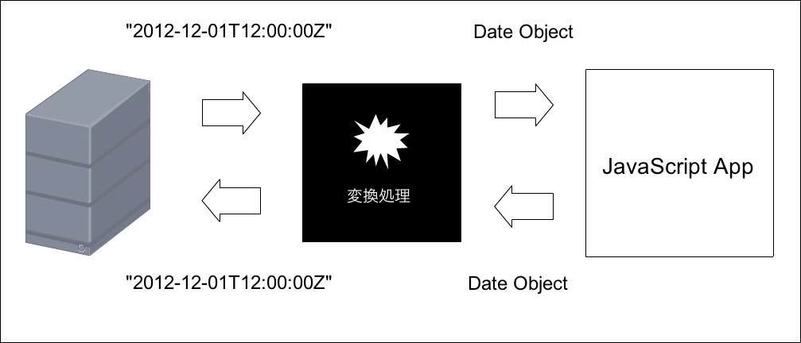
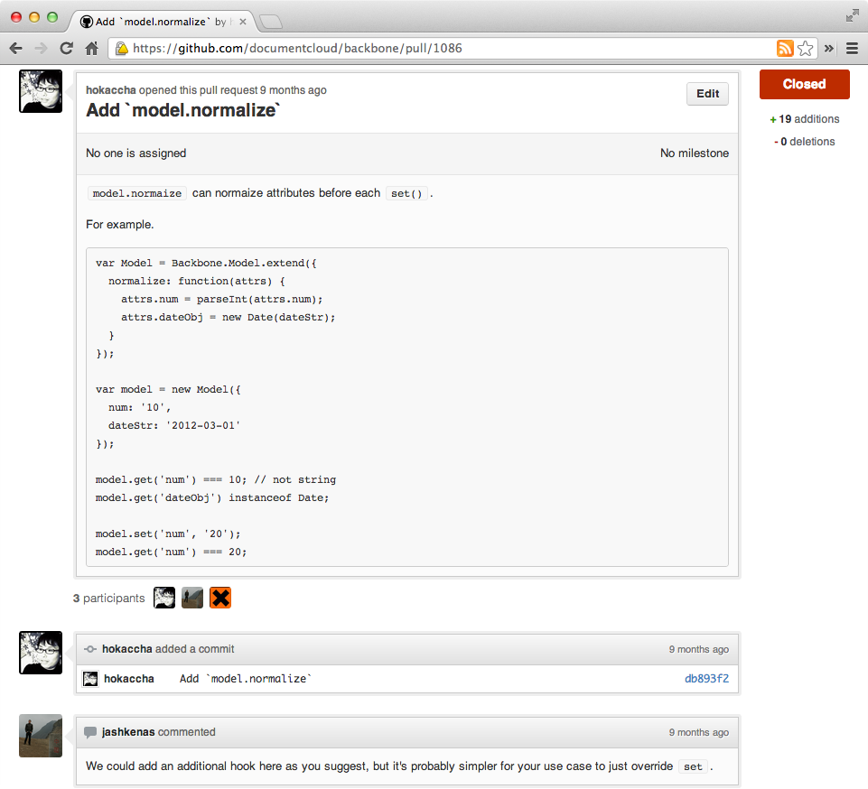

2012.12.04
Backbone.jsのTips的なのをいくつか紹介
値に関数を指定することで実行時に評価されるプロパティ。
（「getValue」でBackbone.jsのコードをgrepすればわかる）
createdのデフォルト値にインスタンスを作成した時刻を設定したい
var Todo = Backbone.Model.extend({
defaults: {
text: null,
completed: false,
created: new Date() // これだとクラスを作った時刻になってしまう
}
});関数にすることでインスタンス作成時に評価される
var Todo = Backbone.Model.extend({
defaults: function() {
return {
text: null,
completed: false,
created: new Date()
};
}
});Comments CollectionがURLで親のentry idを参照したい
var Comments = Backbone.Collection.extend({
initialize: function(entry) {
this.entry = entry;
},
// これだと定義時にthis.entryはないのでエラーになる
url: '/entries/' + this.entry.get('id') + '/comments';
});
Comments CollectionがURLで親のentry idを参照したい
var Comments = Backbone.Collection.extend({
initialize: function(entry) {
this.entry = entry;
},
// 関数にすることで実行時に評価される
url: function() {
return '/entries/' + this.entry.get('id') + '/comments';
}
});

parseプロパティを使う
var MyModel = Backbone.Model.extend({
parse: function(response) {
response.date = new Date(response.date);
return response;
}
});parseプロパティは基本的にSync系のメソッドでしか実行されない
var model = new MyModel();
$form.submit(function() {
// こういう場合にparseプロパティは無力・・
model.set('date', $inputDate.val());
});
setを上書きするしかないけど引数チェックとかがけっこうめんどい
var MyModel = Backbone.Model.extend({
set: function(key, val, options) {
// Backbone.jsのsetのソースからもってきた引数チェック
var attrs, attr, val;
// Handle both `"key", value` and `{key: value}` -style arguments.
if (_.isObject(key) || key == null) {
attrs = key;
options = value;
} else {
attrs = {};
attrs[key] = value;
}
if (!attrs) return this;
if (attrs instanceof Model) attrs = attrs.attributes;
// これがやりたいだけ
attrs.date = new Date(attrs.date);
// 親のsetを呼び出す
return Backbone.Model.set.call(this, attrs, options);
}
});setを上書きしなくてもいいようなパッチ送ったらそんもんset上書きしてやれって一蹴されました＼(^o^)／

toJSONを上書きする
var MyModel = Backbone.Model.extend({
toJSON: function() {
// 元のtoJSONのコードはこれを返してるだけ
var attr = _.clone(this.attributes);
// きっとこういう便利関数がどこかに定義されてるはず
attr.date = Utils.formatDate(attr.date, '%Y-%m-%dT%H:%m:%sZ');
return attr;
}
});(function(global) {
var Backbone = global.Backbone || require('backbone');
var MyModelBase = Backbone.Model.extend({
// 共通のロジック
validate: function(attrs, opts) {
if (attrs.text.length > 100) return new Error('text is too long');
}
});
if (typeof window === 'undefined') {
// for Node.js
module.exports = MyModelBase;
} else {
// for browser
global.MyApp.MyModelBase = MyModelBase;
}
})(this);// Node.js
var MyModelBase = require('./MyModelBase');
var MyModelServer = MyModelBase.extend({
// サーバー側で使うメソッドとか
});
module.exports = MyModelServer;<script src="/path/to/myModelBase.js"></script>MyApp.MyModelClient = MyApp.MyModelBase.extend({
// クライアント側のコード
});